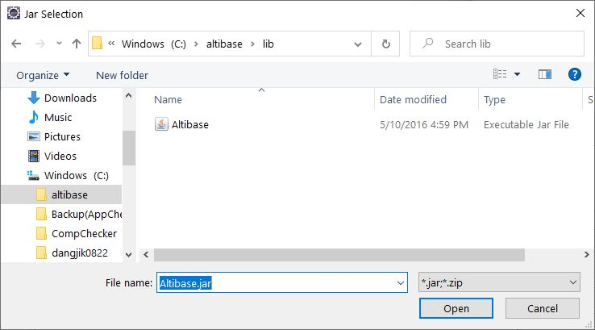

To connect Altibase in iBatis, the user can set the Altibase JDBC Driver and specify the dataSource for Altibase in the SqlMapConfig file. This chapter section describes how to get the Altibase JDBC driver, how to set the JDBC Driver, and how to set the dataSource in SqlMapConfig. In addition, this section explains how to use the FailOver function, how to work with multiple versions of Altibase, and how to call the Stored Procedure/Function.
How to Get Altibase JDBC Driver
The JDBC driver provided by Altibase is Altibase.jar file. This file is located in the $ALTIBASE_HOME/lib directory of the server where Altibase is installed.
As of ALTIBASE 5, Altibase.jar and Altibase5.jar files exist in the $ALTIBASE_HOME/lib directory. Altibase.jar is a generic JDBC driver file. JDBC driver file used. Therefore, when interlocking with one Altibase DB or multiple Altibases with the same version, use the $ALTIBASE_HOME/lib/ Altibase.jar file.
It is necessary to check the Altibase JDBC Driver version to verify that the Altibase DB Server to be interlocked with the Altibase JDBC Driver is compatible.
To check the Altibase JDBC Driver version, execute the following command.
$ java –jar Altibase.jar JDBC Driver Info : Altibase Ver = 5.3.3.13 for JavaVM v1.4, CMP:5.6.1, $Revision: 14502 $ Jan 13 2010 14:35:28
At this time, if the cm protocol version of the Altibase DB server and the CMP of the Altibase JDBC Driver are the same, they are compatible.
$ altibase -v version 5.3.3.13 XEON_LINUX_redhat_Enterprise_AS4-64bit-5.3.3.13-release-GCC3.4.6 (xeon-redhat-linux-gnu) Jan 13 2010 14:35:30, binary db version 5.4.1, meta version 5.6.1, cm protocol version 5.6.1, replication protocol version 5.4.1
It is recommended that the user uses the Altibase JDBC Driver file, which is the same as or higher than the version of Altibase DB Server, because JDBC related bugs may have been fixed as the version was upgraded.
How to Set Up in JDBC Driver
The downloaded JDBC driver, Altibase.jar, can be added to the classpath or placed in an appropriate directory on the web server.
If the user is developing using Eclipse, the user can add the Altibase JDBC Driver to the project as follows.
Project – JRE System Library [DOCKI: J2SE-1.5]-Properties – Installed JREs – Click jre among the items – Click Edit – Add External JARs to add Altibase.jar, Altibase JDBC Driver.

Setting up dataSource in SqlMapConfig file to link with Altibase
The user can connect to Altibase by specifying the property for Altibase in the <transactionManager> tag of the SqlMapConfig file. At this time, the user can directly enter the property values in the SqlMapConfig file, or the user can create a separate properties file and load the property values written in this file for use.
The following is an example of defining properties for Altibase in a properties file called db.properties, and reading these properties and using them in the SqlMapConfig file.
Ex) SimpleConnection db.properties file
driver=Altibase.jdbc.driver.AltibaseDriver url=jdbc:Altibase://192.168.1.35:21129/mydb username=sys password=manager
The description of each value set in this file is as follows.
| Property | Description |
|---|---|
| driver | Altibase JDBC driver class name |
| url | Connection string information for connection with Altibase is "jdbc:Altibase://IP:port_no/db_name" |
| username | Database account |
| password | Database password |
Ex) SimpleConnection's SqlMapConfigExample.xml file
<sqlMapConfig>
<properties resource="db.properties" />
<transactionManager type="JDBC" >
<dataSource type="SIMPLE"> -- SIMPLE is the built-in transaction manager name
<property name="JDBC.Driver" value="${driver}"/>
<property name="JDBC.ConnectionURL" value="${url}"/>
<property name="JDBC.Username" value="${username}"/>
<property name="JDBC.Password" value="${password}"/>
</dataSource>
</transactionManager>
<sqlMap resource="Person.xml" />
</sqlMapConfig>
The driver, url, username, and password properties specified in db.properties are read and set in the JDBC.Driver, JDBC.ConnectionURL, JDBC.Username, and JDBC.password properties of the dataSource.
To execute the example SimpleConnection project above, Altibase.jar and ibatis-2.3.4.x.jar files are required.
Connection Using FailOver
FailOver is supported as of Altibase 5.3.3. To use the FailOver function, the user can put FailOver-related properties in the part where the user writes the connection url of the dataSource. The following is an example of connecting to Altibase using FailOver. Connection url part is defined in db.properties file.
Ex) FailOverSample's db.properties file
driver=Altibase.jdbc.driver.AltibaseDriver url=jdbc:Altibase://192.168.6.224:21129/mydb? AlternateServers=(192.168.1.35:21129)& ConnectionRetryCount=1&ConnectionRetryDelay=1& SessionFailOver=on&LoadBalance=off username=sys password=manager
FailOver related properties that can be defined in the connection url specified in the above file are as follows.
| Property | Description |
|---|---|
| AlternateServer | Indicates the available servers to be connected when a failure occurs (IP Address1:Port1, IP Address2:Port2,...) and describes them. |
| ConnectionRetryCount | If there is a failure to connect to the available server, the number of attempts to connect is repeated |
| ConnectionRetryDelay | Time to wait before attempting to connect again when the available server connection fails (in seconds) |
| LoadBalance | If set to on, random selection is made including the default server and available servers when the first connection is attempted. If set to off, it connects to the default server when it tries to connect for the first time, and if it fails, it connects to the server described by AlternateServer. |
| SessionFailOver | Indicates whether to perform STF (Service Time Fail-Over). on: STF, off: CTF CTF(Connection Time Fail-Over) refer to recognizing a failure at the time of DBMS connection and retrying the connection to another normal Server. STF(Service Time Fail-Over) means that it detects a failure during service, reconnects to the DBMS of another available node, restores the properties of the session, and allows the user application to perform the business logic again. (STF performs Fail-Over only for DB access, and failed transactions must be reprocessed by the user.) |
In order to execute the above example FailOverSample project, Altibase.jar and ibatis-2.3.4.x.jar files are needed as in “Set dataSource in SqlMapConfig file to link with Altibase”.
Connecting Altibase 5 and Previous Versions at the Same Time
Starting with Altibase 5, the ALTIBASE 5 version-specific JDBC Driver (Altibase5.jar) is provided so that one application can connect to Altibase 5 and Altibase 4 or Altibase 3 simultaneously. By using this driver, the user can access two versions of Altibase between Altibase 5-Altibase 4, or Altibase 5-Altibase 3, Altibase 5.1.5-Altibase 5.3.3.
In order to distinguish it from the existing Altibase.jar, Altibase5.jar for Altibase 5 is required separately. In addition, in the part that is specified in the dataSource, the JDBC Driver class name should also specify Altibase5.jdbc.driver.AltibaseDriver for Altibase 5 instead of the existing Altibase.jdbc.driver.AltibaseDriver.
In order to integrate with other versions of Altibase in iBATIS, you need to create a separate SqlMapConfig file for each version and read each SqlMapConfig file in the application.
Please note that in this case, the program should load Altibase5.jdbc.driver.AltibaseDriver first and then Altibase.jdbc.driver.AltibaseDriver.
The following is an example of loading the drivers of two versions of ALTIBASE using Altibase.jar and Altibase5.jar files.
Ex) db.properties1 file of MultiVersionConneciton
Settings for Altibase 5 version
driver=Altibase5.jdbc.driver.AltibaseDriver url=jdbc:Altibase://192.168.6.224:21129/mydb username=sys password=manager
Ex) db.properties2 file of MultiVersionConnection
Settings for Altibase 5 and earlier
driver=Altibase.jdbc.driver.AltibaseDriver url=jdbc:Altibase://192.168.1.35:21129/mydb username=sys password=manager
Ex) MultiVersionConneciton's SqlMapConfigExample1.xml file
Settings for Altibase 5 version
<sqlMapConfig>
<properties resource="db.properties1" />
<transactionManager type="JDBC" >
<dataSource type="SIMPLE">
<property name="JDBC.Driver" value="${driver}"/>
<property name="JDBC.ConnectionURL" value="${url}"/>
<property name="JDBC.Username" value="${username}"/>
<property name="JDBC.Password" value="${password}"/>
</dataSource>
</transactionManager>
<sqlMap resource="Person.xml" />
</sqlMapConfig>
Ex) MultiVersionConneciton's SqlMapConfigExample2.xml file
Setting for ALTIBASE 5 and earlier
<sqlMapConfig>
<properties resource="db.properties2" />
<transactionManager type="JDBC" >
<dataSource type="SIMPLE">
<property name="JDBC.Driver" value="${driver}"/>
<property name="JDBC.ConnectionURL" value="${url}"/>
<property name="JDBC.Username" value="${username}"/>
<property name="JDBC.Password" value="${password}"/>
</dataSource>
</transactionManager>
<sqlMap resource="Person.xml" />
</sqlMapConfig>
Ex) PersonApp.java file of MultiVersionConnection
…
String resource1 ="SqlMapConfigExample1.xml";
Reader reader1 = Resources.getResourceAsReader(resource1);
SqlMapClient sqlMap1 = SqlMapClientBuilder.buildSqlMapClient(reader1);
String resource2 ="SqlMapConfigExample2.xml";
Reader reader2 = Resources.getResourceAsReader(resource2);
SqlMapClient sqlMap2 = SqlMapClientBuilder.buildSqlMapClient(reader2);
…
In the PersonApp.java example above, to load Altibase5.jdbc.driver.AltibaseDriver before Altibase.jdbc.driver.AltibaseDriver, read the SqlMapConfigExample1.xml file using Altibase5.jdbc.driver.AltibaseDriver as JDBC.Driver first. have. The driver for Altibase 5 must be loaded first.
In order to execute the MultiVersionConnection project included in the example, not only the ibatis-2.3.4.x.jar file used previously, but also Altibase.jar and Altibase5.jar files are needed. These files exist in the lib directory of the directory where ALTIBASE is installed ($ALTIBASE_HOME). The user can use the Altibase5.jar file of the Altibase 5 version and the Altibase.jar file of the previous version.
Calling Procedure/Function
When calling the Stored Procedure/Function created in DB in iBATIS, set the information on the parameter defined in the Stored Procedure/Function in the SqlMap file, and in the <procedure> tag, call the Stored Procedure/Function applied to CallableStatement applied to the tag. Just define it.
The following is an example of calling the Stored Procedure/Function.
Ex) ProcedureSample Procedure/Function creation statement
CREATE OR REPLACE PROCEDURE sum_proc
(
p_num1 IN NUMBER,
p_num2 IN NUMBER,
p_num3 OUT NUMBER
)
AS
BEGIN
p_num3 := p_num1 + p_num2;
END;
/
CREATE OR REPLACE FUNCTION sum_func
(
p_num1 IN NUMBER,
p_num2 IN NUMBER
)
RETURN NUMBER
AS
v_num NUMBER;
BEGIN
v_num := p_num1 + p_num2;
RETURN v_num;
END;
/
Ex) Procedure.xml(SqlMap) file of Procedure
<sqlMap namespace="Procedure">
<parameterMap id="ProcedureParam" class="java.util.Map">
<parameter property="p_num1" jdbcType="NUMERIC"
javaType="int" mode="IN" />
<parameter property="p_num2" jdbcType="NUMERIC"
javaType="int" mode="IN" />
<parameter property="p_num3" jdbcType="NUMERIC"
javaType="int" mode="OUT"/>
</parameterMap>
<parameterMap id="FunctionParam" class="java.util.Map">
<parameter property="p_num3" jdbcType="NUMERIC"
javaType="int" mode="OUT"/>
<parameter property="p_num1" jdbcType="NUMERIC"
javaType="int" mode="IN" />
<parameter property="p_num2" jdbcType="NUMERIC"
javaType="int" mode="IN" />
</parameterMap>
<procedure id="sumProc" parameterMap="ProcedureParam" >
{call sum_proc(?,?,?)}
</procedure>
<procedure id="sumFunc" parameterMap="FunctionParam" >
{call ? := sum_func(?,?)}
</procedure>
</sqlMap>
Define the type and IN/OUT settings for the parameters of the Stored Procedure/Function in the <paramaterMap> tag, and specify the id value of the <paramaterMap> tag in the parameterMap attribute in the <procedure> tag. Then, in the <procedure> tag, write a statement that calls Stored Procedure/Function.
To execute the ProcedureSample example, the Altibase.jar and ibatis-2.3.4.x.jar files are required, as in “Configuring a dataSource in the SqlMapConfig file to link with Altibase”.
{kind=link}
{kind=link}
{kind=link}
{kind=link}
{kind=link}
{kind=link}
{kind=link}
{kind=link}
{kind=link}
{kind=link}